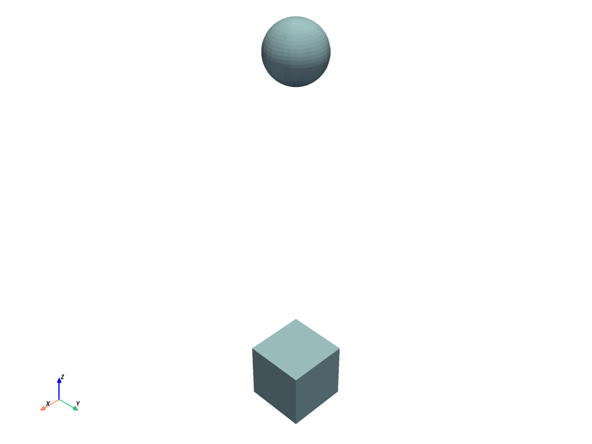
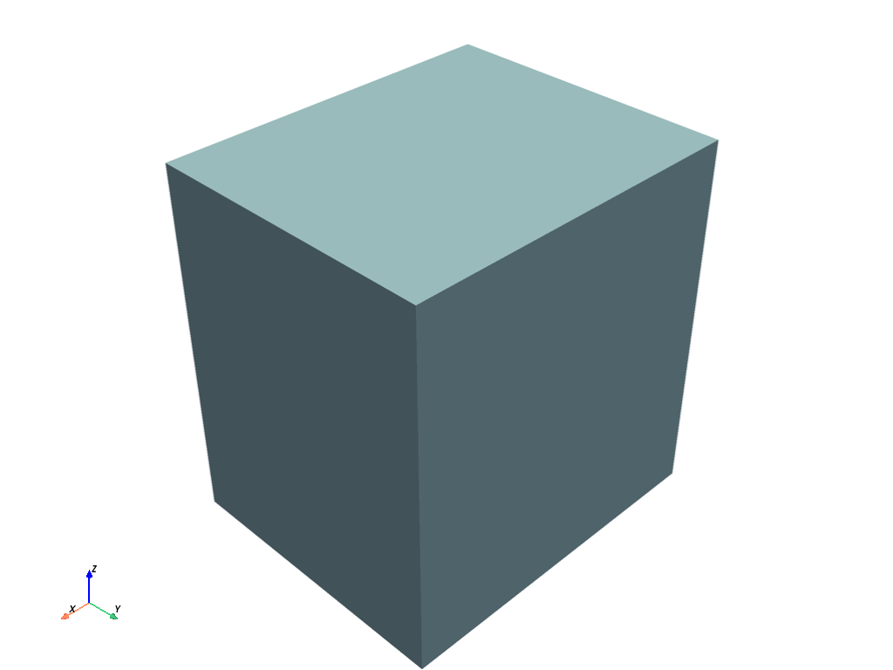

Note
Go to the end to download the full example code.
Activate the picker#
This example shows how to activate the picker, which is the tool that you use to select an object in the plotter and get its name.
Relate CustomObject class with a PyVista mesh#
import pyvista as pv
# Note that the ``CustomObject`` class must have a way to get the mesh
# and a name or ID.
class CustomObject:
def __init__(self):
self.name = "CustomObject"
self.mesh = pv.Cube(center=(1, 1, 0))
def get_mesh(self):
return self.mesh
def name(self):
return self.name
# Create a custom object
custom_cube = CustomObject()
custom_cube.name = "CustomCube"
custom_sphere = CustomObject()
custom_sphere.mesh = pv.Sphere(center=(0, 0, 5))
custom_sphere.name = "CustomSphere"
Create two MeshObjectPlot instances#
from ansys.tools.visualization_interface import MeshObjectPlot
# Create an instance
mesh_object_cube = MeshObjectPlot(custom_cube, custom_cube.get_mesh())
mesh_object_sphere = MeshObjectPlot(custom_sphere, custom_sphere.get_mesh())
Activate the picking capabilities#
from ansys.tools.visualization_interface import Plotter
from ansys.tools.visualization_interface.backends.pyvista import PyVistaBackend
pv_backend = PyVistaBackend(allow_picking=True, plot_picked_names=True)
pl = Plotter(backend=pv_backend)
pl.plot(mesh_object_cube)
pl.plot(mesh_object_sphere)
pl.show()

[]
Activate the hover capabilities#
from ansys.tools.visualization_interface import Plotter
from ansys.tools.visualization_interface.backends.pyvista import PyVistaBackend
pv_backend = PyVistaBackend(allow_hovering=True)
pl = Plotter(backend=pv_backend)
pl.plot(mesh_object_cube)
pl.plot(mesh_object_sphere)
pl.show()

[]
Using StructuredGrid mesh#
import numpy as np
class CustomStructuredObject:
def __init__(self):
self.name = "CustomObject"
xrng = np.arange(-10, 10, 2, dtype=np.float32)
yrng = np.arange(-10, 10, 5, dtype=np.float32)
zrng = np.arange(-10, 10, 1, dtype=np.float32)
x, y, z = np.meshgrid(xrng, yrng, zrng, indexing='ij')
grid = pv.StructuredGrid(x, y, z)
self.mesh = grid
def get_mesh(self):
return self.mesh
def name(self):
return self.name
pv_backend = PyVistaBackend()
pl = Plotter(backend=pv_backend)
structured_object = CustomStructuredObject()
mo_plot = MeshObjectPlot(structured_object, structured_object.get_mesh())
pl.plot(mo_plot)
pl.show()

[]
Total running time of the script: (0 minutes 0.970 seconds)